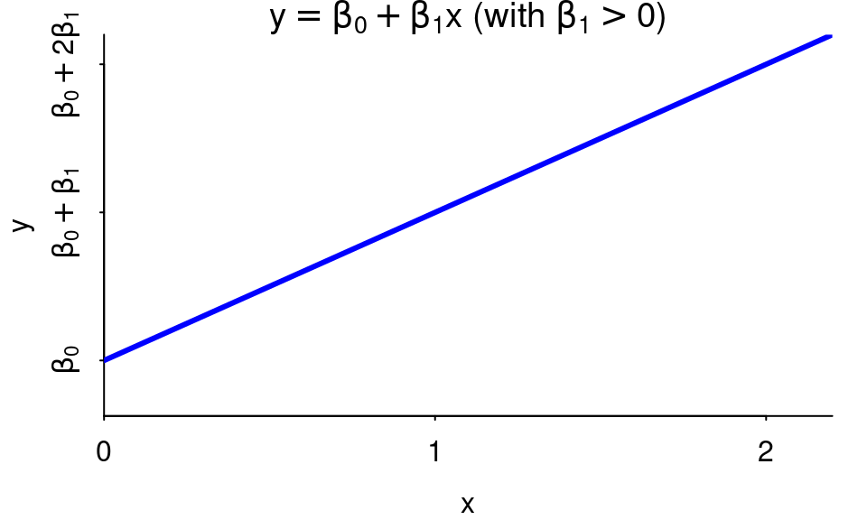

Simple Linear Regression: The Model
David Gerard
2021-07-22
Learning Objectives
- Chapter 1 of KNNL.
- Goals of regression analysis.
- The simple linear regression model.
- Least-squares approach to estimating parameters.
- The Ordinary Least Squares (OLS) estimates.
Overview
Observational/experimental Units: The people/places/things/animals/groups that we collect information about. Also known as “individuals” or “cases”. Sometimes I just say “units”.
Variable: A property of the observational/experimental units.
- E.g.: height of a person, area of a country, marital status.
Value: The specific level of a variable for an observational/experimental unit.
- E.g.: Bob is 5’11’’, China has an area of 3,705,407 square miles, Jane is divorced.
Quantitative Variable: The variable takes on numerical values where arithmetic operations (\(+\)/\(-\)/\(\times\)/\(\div\)) make sense.
- E.g.: height, weight, area, income.
- Counterexample: Phone numbers, social security numbers.
Regression Analysis: Study relationship between or more quantitative variables.
Response Variable:
- What we think is either caused by or explained by the predictor variable.
- Also called “outcome variable” and “dependent variable”.
- Usually denote this with the letter \(y\).
Predictor Variable:
- What we think causes or explains the outcome variable.
- Also called a “feature”, “explanatory variable”, “independent variable”, and (when doing an experiment) a “treatment variable”.
- Typically have more than one predictor.
- Usually denote these with the letters \(x_1\), \(x_2\), \(x_3\), \(\ldots\), \(x_p\).
Two quantitative variables can have either a functional or a statistical relationship.
Functional relationship: There is an exact mathematical formula relating the value of one quantitative variable \(x\) (the predictor) to the other \(y\) (the response). \[ y = f(x) \] \(f()\) is some function relating the correspondence of \(x\) to \(y\).
- E.g.: \(x\) = the radius of a circle and \(y\) = the area of a circle then \[ y = \pi x^2 \]
Statistical Relationship:
Is not a perfect relation.
Functional + noise.
E.g. “bread and peace” data from Chapter 7 of ROS looking at the statistical relationship between economic growth and vote-share of the incumbant for president.
library(readr) library(ggplot2) hibbs <- read_csv("https://dcgerard.github.io/stat_415_615/data/hibbs.csv") qplot(x = growth, y = vote, data = hibbs) + geom_smooth(method = "lm", se = FALSE)
Can say higher higher growth tends to have higher vote-share. But relationship is not perfect (but still pretty good!)
The scattering of points about the line represents variation in vote share that is not associated with economic growth.
Goals of Regression:
- Description:
- Gene expression (\(x\)) is associated with height (\(y\)).
- Biological sex (\(x\)) is associated with salary (\(y\)).
- Prediction:
- Predict sales (\(y\)) based on product attributes (\(x\)’s)
- Predict crop yield (\(y\)) based on genomic markers (\(x\)’s)
- Description:
When we describe relationships, this does not imply causation.
- You need very special settings for “causal inference”, which we might cover later in the course.
- One special case where we can make causal claims is when we have a completely randomized experiment, where predictor values are randomly assigned.
E.g. A researcher noticed that murder rates went up whenever ice cream consumption increased.
The Simple Linear Regression Model
The model: \[ Y_i = \beta_0 + \beta_i X_i + \epsilon_i \]
\(Y_i\): The response value for unit \(i\).
\(X_i\): The predictor value for unit \(i\).
\(\beta_0\): The \(y\)-intercept of the regression line.
\(\beta_1\): The slope of the regression line.
\(\epsilon_i\): The random noise of individual \(i\).
- This is a random variable.
- \(E[\epsilon_i] = 0\) (mean zero).
- \(var(\epsilon_i) = \sigma^2\) (variance is the same for all \(i\)).
- \(cor(\epsilon_i, \epsilon_j) = 0\) for all \(i \neq j\) (uncorrelated errors).
\(X_i\) and \(Y_i\) are typically known. We usually have a sample of \((X_1, Y_1), (X_2, Y_2), \ldots, (X_n, Y_n)\).
- E.g. \(X_i\) could be the economic growth in year \(i\), and \(Y_i\) could be the incumbent vote-share for year \(i\).
\(\beta_0\), \(\beta_1\) are called parameters and are typically not observed. They must be inferred from a sample of values \((X_1, Y_1), (X_2, Y_2), \ldots, (X_n, Y_n)\).
Regression line: \(y = \beta_0 + \beta_1x\)
Assumptions in decreasing order of importance:
Linearity: \(E[Y_i|X_i] = \beta_0 + \beta_1X_i\)
Uncorrelated errors: \(cor(\epsilon_i, \epsilon_j) = 0\) for all \(i \neq j\)
Constant Variance: \(var(\epsilon_i) = \sigma^2\)
Note: Distribution of \(Y_i\) is conditional on \(X_i\).

Exercise: Suppose the regression model between two variables is \[ Y_i = 3 + 2 x_i + \epsilon_i,~~var(\epsilon_i) = \sigma^2 \]
What is the mean of \(Y_i\) if \(X_i = -1\)?
What is the variance of \(Y_i\) if \(X_i = -1\)?
Suppose \(X_i = 1\) and \(Y_i = 4\). What is \(\epsilon_i\)?
Review of interpretation
\(\beta_0\):
- \(Y\)-intercept of the regression line.
- If \(0\) is in the range of the \(X_i\)’s, then can also interpret this as the value of \(E[Y_i|X_i = 0]\). But cannot use this interpretation if 0 is outside of the \(X_i\)’s.
\(\beta_1\):
- Difference in average of \(Y_i\)’s when \(X_i\)’s differ by 1.
- Do not use implicitely causal language like “change” or “increase” or “decrease”.
Relationships are positive if \(\beta_1 > 0\) (larger \(x\) tend to correspond to larger \(y\)).

Relationships are negative if \(\beta_1 < 0\) (larger \(x\) tend to correspond to smaller \(y\)).

Two variables are uncorrelated if \(\beta_1 = 0\) (the value of \(x\) does not matter, the value of \(y\) tends to stay the same).

Example: In the bread and peace example, a regression line that fits the data well is
\[ y = 46.25 + 3.06 \]
Correct: Years that show 1% more growth tend to have 3% larger vote shares for the incumbant.
Incorrect: Incumbant vote-share increases 3% for each 1% increase in growth.
Estimating Parameters
We have data \((X_1, Y_1), (X_2, Y_2), \ldots, (X_n, Y_n)\), and we want to estimate \(\beta_0\) and \(\beta_1\) in the equation
\[ Y_i = \beta_0 + \beta_1 X_i + \epsilon_i \]
Idea: Try to get \(Y_i\) as close to its mean. So we want each \(Y_i - (\beta_0 + \beta_1 X_i)\) to be close to 0.
To make all of these differences on average close to zero, consider minimizing the \(sum of squares\):
\[ \sum_{i=1}^n \left[Y_i - (\beta_0 + \beta_1 X_i)\right]^2 \]
Visualization:

We can solve for the \(\beta_0\) and \(\beta_1\) that minimize this sum of squares.
We denote the resulting estimates by \(\hat{\beta}_0\) and \(\hat{\beta}_1\), and call them the OLS estimates (ordinary least squares estimates).
In equations:
\[\begin{align} \hat{\beta}_0 &= \bar{Y} - \hat{\beta}_1\bar{X},\\ \hat{\beta}_1 &= cor(X, Y) \frac{sd(Y)}{sd(X)},\\ cor(X, Y) &= \frac{\frac{1}{n-1}\sum_{i=1}^n(X_i - \bar{X})(Y_i - \bar{Y})}{\sqrt{\frac{1}{n-1}\sum_{i=1}^n(X_i - \bar{X})^2}\sqrt{\frac{1}{n-1}\sum_{i=1}^n(Y_i - \bar{Y})^2}},\\ sd(X) &= \sqrt{\frac{1}{n-1}\sum_{i=1}^n(X_i - \bar{X})^2},\\ sd(Y) &= \sqrt{\frac{1}{n-1}\sum_{i=1}^n(Y_i - \bar{Y})^2}. \end{align}\]
Notice that the estimate of \(\beta_1\) is a linear function of the correlation coefficient.
To derive these (if you are a Statistics BS or MS, you should do this exercise once without looking at the solution):
- Take the derivative of the least squares objective function with respect to both \(\beta_0\) and \(\beta_1\).
- Set equal to 0 and solve for \(\beta_0\) and \(\beta_1\) (2 equations and 2 unknowns).
- Simplify into the terms above.
- Use a second derivative test to verify that this is a minimum.
Finding OLS Estimates in R
Use
lm()(for “linear model”) to obtain coefficient estimates.The first argument of
lm()is a formula of the formresponse ~ predictor. That squiggly line (~) separating the response from the predictor is called a “tilde”.The second argument is the data frame that holds the variables.
Using the Hibbs data
lmout <- lm(vote ~ growth, data = hibbs)You can print out the values and the values under
Coefficientsare the OLS estimates of \(\beta_0\) and \(\beta_1\).lmout## ## Call: ## lm(formula = vote ~ growth, data = hibbs) ## ## Coefficients: ## (Intercept) growth ## 46.25 3.06\(\hat{\beta}_0 = 46.25\)
\(\hat{\beta}_1 = 3.06\)
Estimated regression line: \(y = 46.25 + 3.06 x\).
It is a pain to extract these values using base R, but the
{broom}package has a nice function calledtidy()that returns coefficient estimates in a data frame.library(broom) est <- tidy(lmout) est## # A tibble: 2 x 5 ## term estimate std.error statistic p.value ## <chr> <dbl> <dbl> <dbl> <dbl> ## 1 (Intercept) 46.2 1.62 28.5 8.41e-14 ## 2 growth 3.06 0.696 4.40 6.10e- 4est$estimate## [1] 46.248 3.061Exercise: From the
mtcarsdata, find the OLS estimates ofmpg(the response) onwt(the predictor). Interpret the coefficients. You can load these data into R using:data("mtcars")